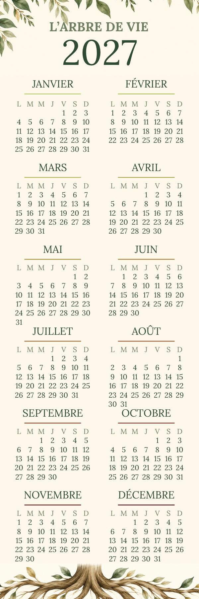
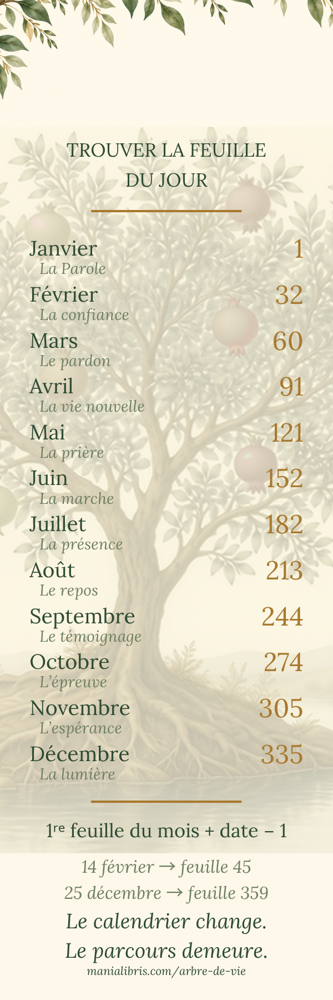

Compagnon de L’Arbre de vie
Le livre n’a pas d’année : il a trois cent soixante-cinq feuilles, et l’on en prend une par jour, dans l’ordre. Le marque-page fait le pont — il associe chaque date à sa feuille, et se glisse dans le livre à l’endroit où vous vous êtes arrêté.
Il est gratuit, sans inscription, et renouvelé chaque décembre pour l’année suivante. Le livre, lui, ne change pas.


Calendrier au recto, table des feuilles au verso. Trois marque-pages par feuille A4 : gardez-en un, donnez les deux autres.
PDF A4 à imprimer PNG recto PNG verso PDF 1.4 Mo, deux pages · PNG 600 × 1800 px, 300 ppp, pour un imprimeurDisponible en décembre 2027, à cette même adresse.
La règle tient en une ligne, et elle ne change jamais d’une année à l’autre :
1re feuille du mois + date − 1
Le verso du marque-page donne la première feuille de chacun des douze mois. Ainsi le 14 février mène à la feuille 45, et le 25 décembre à la feuille 359.
Le marque-page ne sert à rien tout seul : les nombres qu’il donne sont les feuilles de L’Arbre de vie — douze fruits, trois cent soixante-cinq feuilles, une portion des Écritures par jour.
Broché et Kindle sur Amazon. Un marque-page imprimé sur carton mat accompagne les exemplaires commandés directement auprès de l’auteur ; le fichier ci-dessus donne exactement le même calendrier, sur votre imprimante.
{kind=link}
{kind=link}